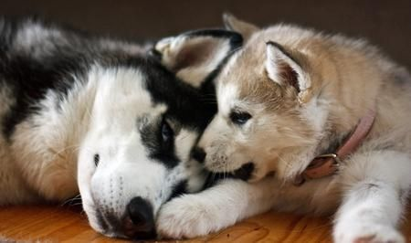

La llegada del nórdico a casa
Y el momento ha llegado. Ya está en casa. Le hemos comprado una correa, un collar, bebederos, una camita,… todo para que esté a gusto.

Pero, ¿qué hay que hacer?
Quieres darle mucho cariño, estar todo el tiempo posible con él y ofrecerle todo lo que no ha tenido, pero eso le puede llegar a agobiar. Lo primero que tienes que hacer es darle su espacio, su tiempo de adaptación; su adaptación a los nuevos miembros de la familia, los ruidos, las normas (establece claramente la jerarquía con respecto al resto de miembros) y las rutinas.
Puede que sea más activo o lo contrario, más tranquilo de lo que será hasta que se acostumbre a las rutinas puede que orine con más frecuencia.
Si el perro viene con algún problema, debe tener su periodo de recuperación. Habla con la protectora para que te asesore como poder ayudarle, incluso si es necesario el apoyo de un especialista ellos sabrán cual te viene bien según su problema. Recuerda, cualquier perro nórdico es totalmente recuperable.

Tengo otro perro en casa
Han estado juntos y la primera impresión es buena. Es normal que al principio pueda haber disputas entre ellos, se ha introducido un nuevo miembro donde antes el otro era el rey, pero tras ese periodo de adaptación todo irá bien. Incluso luego se echarán de menos.

Antes de la primera vez que entre en nuestra casa, tienen que juntarse en un lugar neutral. Dejarles que se huelan, se conozcan e incluso jueguen un poco. Si existe algo de tensión, pon orden entre los dos y seguir como si no hubiera pasado nada.
Se han conocido, aún no pueden entrar, antes tienen que dar un largo paseo los dos (debes reservar ese día para ellos, las precipitaciones no son buenas y la introducción a la nueva casa es algo muy importante). En este paseo se hacen más amigos, andan al mismo ritmo y ya se les puede ir llamando “manada”.
Estoy en la puerta, primero debes dejar pasar al perro que ya estaba y luego al nuevo, no se debe reemplazar al perro que ya estaba porque si no se verá amenazado por la llegada del nuevo miembro.
Debes ser justo en los conflictos que se puedan crear, sobre todo en las situaciones más problemáticas como son las sesiones de mimos y la comida.
En cuanto a la comida, para evitar las posibles disputas deben tener cada uno su cuenco. Al principio, estate presente en la rutina de la comida e intervenir si fuese necesario. Debes darle la comida primero al perro que ya estaba y cuando hayan acabado retirarles los cuencos.
Normalmente, el perro nuevo copia el comportamiento del perro que ya vivía con la familia, por lo que si nuestro perro no está educado correctamente puede que surjan problemas sobre todo si hacen equipo entre ellos.
Tengo un gato en casa
Si en la protectora nos han dicho que se ha probado o que anteriormente convivia con gatos y se lleva bien con ellos, no hay problema. Tras el periodo de adaptación todo irá de maravilla.
Pero en la protectora no saben si se lleva bien o mal con gatos, además que con los nórdicos se tiene mala fama con respecto a este tema que no es para nada cierto. Con una buena introducción pueden llevarse perfectamente.
El contacto de los dos debe ser poco a poco, supervisada por ti y valorando las reacciones para evitar posibles conflictos.
Si se acercan en modo curioso, déjales que se huelan y se conozcan. Aunque la primera vez haya ido bien, es mejor que estén separados por un tiempo y solo les juntes cuando estés tú presente para poder supervisarlo.
Si se acerca el perro de modo nervioso o quisiera usar al gato como presa, decirle un NO rotundo. Cuando llegue al modo en que se acerca de una manera tranquila y curiosa, llenarle de elogios, cariños e incluso premios. Eso es lo que queremos.
Si aún así no conseguimos que se lleven bien, es mejor pedir ayuda a un profesional. Infórmate de expertos en ese problema por tu zona, en la protectora donde adoptaste al perro, por internet o a nosotros que intentaremos buscarte al que mejor se adapte a tus necesidades.
Tenemos niños pequeños
Sea cual sea la raza del perro, nunca debemos dejar sin supervisión al perro con los niños. Aunque nuestro perro sea el más bueno del mundo, los niños tienen reacciones que para los perros les resulta ilógicas y pueden reaccionar mal.
Lo primero que hay que hacer es dejar claro al perro que el niño es un miembro de la familia y tiene que respetarle, aunque hay que enseñar más cosas a los niños que al perro. Deben respetarle, sobre todo sus horas de comida y de sueño. Tenemos que enseñar al niño como jugar con el perro, no le deben sobreexcitar ya que así son más imprevisibles, nada de juegos de fuerza, gruñidos o peleas, podría llegar a ser peligroso.
Mi perro adoptado tiene problemas de separación
Algunos perros adoptados tienen predisposición a problemas de ansiedad por separación. Han sido abandonados y no quieren que les vuelva a suceder.
Aunque da igual si se ha comprado y es cachorro. Al principio o incluso los fines de semana, se les suele dar un exceso de cariño, juegos, paseos, atención,.. Es decir, estamos creando una diferencia muy grande entre cuando estamos en casa y no estamos.
Para evitarlo, al principio ir probando a dejarle solo durante ratos cortos e irlo incrementando. Intenta que no se aburra en tu ausencia, hay unos juguetes llamados Kong (los venden en muchos sitios) donde introduces comida y tienen que intentar sacarla. Hay para cachorros y adultos, de distintos tamaños e incluso con dos tipos de dureza. Puedes tener al perro entretenido incluso más de una hora y luego acaba cansado por lo que se echará a dormir. También sirve si tienes un cachorro que te destroza todo el mobiliario de casa mientras no estás, de este modo intentará destrozar el juguete (imposible si coges el de mayor dureza) en vez de tu casa.
Pero no lo has conseguido evitar y ves al perro que lo pasa fatal, puedes intentar varias cosas. Ya hemos comentado la importancia del ejercicio, pero si consigues cansarlo antes de irte (sesión de bici, patines,… una actividad activa) el perro solo querrá llegar a casa y descansar.
Una de las ventajas de tener más de un perro es que se hacen compañía y si tienes un perro con este problema es importante; el perro con el problema copiará el comportamiento del perro tranquilo ya que tienden al equilibrio.
Lo mejor es que consultes con un profesional sobre el tema ya que no todos los casos son iguales y puede ser síntoma de otros problemas.
Ya ha pasado el periodo de adaptación y está incluido en tu familia, es hora de empezar a disfrutar la nueva vida.
Si tienes alguna duda, intentaremos ayudarte lo mejor posible: contacto@nordicosenadopcion.com
Comentarios
Laura
Jue, 02/02/2012 - 19:19
Permalink
Adoptar
Hola
Todos los nórdicos que hay en adopción están en la web, hay un filtro por razas para que puedas ver los huskys, alaskas y sus respectivos cruces y aparte hay un filtro por edades en que podrás encontrar los nórdicos cachorros (hasta 1 año), jóvenes (de 1 a 5 años) y adultos (más de 5 años).
Si tienes alguna duda escribenos al email: contacto@nordicosenadopcion.com
Añadir nuevo comentario